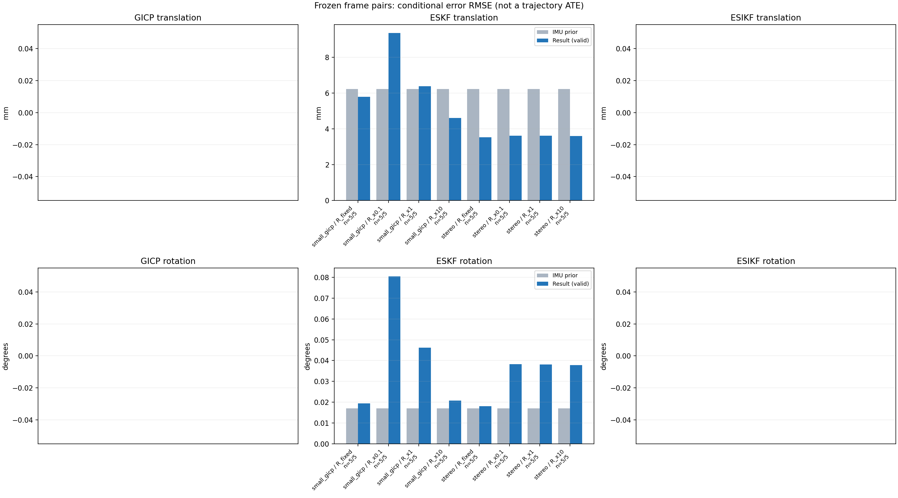

20261015_112553_up · depth=sgbm · cache=6c67cdcfe156e584377c
配准代码版本：744ac2d993ae629b0cc44a3b1d995e04ab4fad48；观测生成版本：744ac2d993ae629b0cc44a3b1d995e04ab4fad48。
固定图像对与纯 IMU 先验；ESKF 回放固定 GICP 观测，ESIKF 直接读取点云。真值只用于此报告。
同时查看 converged 与 solver_status：上游默认 Stereo 在 max_iter / stopped_at_minimum 时也可能置 converged=true。valid 表示输入检查通过，不表示精度提升。欧氏 GICP 未提供独立的点距 RMSE，该列显示 NaN。
SGBM 调试基线：结果用于检查接口、坐标与融合行为，模型视差替换后需重新评估 GICP 精度和协方差。
误差按每对图像的锚点计算，单位 m / degrees。此处 RMSE 不是全序列 ATE；末帧受同一锚点条件约束。NIS 与条件马氏距离是诊断量，少量相关图像对不能用于宣称协方差已校准。
全部指标 CSV · R / P / K 矩阵 CSV · Stereo 求解逐轮 CSV · ESIKF 逐轮 CSV · 配置快照 · 矢量图
| stage | method | variant | valid | total | translation RMSE (m) | rotation RMSE (deg) |
|---|---|---|---|---|---|---|
| eskf | small_gicp | R_fixed | 5 | 5 | 0.0057832 | 0.019459 |
| eskf | small_gicp | R_x0.1 | 5 | 5 | 0.0093468 | 0.080452 |
| eskf | small_gicp | R_x1 | 5 | 5 | 0.0063834 | 0.046191 |
| eskf | small_gicp | R_x10 | 5 | 5 | 0.0046037 | 0.020717 |
| eskf | stereo | R_fixed | 5 | 5 | 0.0035374 | 0.018154 |
| eskf | stereo | R_x0.1 | 5 | 5 | 0.0036178 | 0.0382 |
| eskf | stereo | R_x1 | 5 | 5 | 0.0036165 | 0.038162 |
| eskf | stereo | R_x10 | 5 | 5 | 0.0036047 | 0.037799 |

| stage | case | method | variant | status | solver_status | inliers | converged | covariance_convention | covariance_from_hessian | fitness | registration_rmse_m | prior_trans_error_m | result_trans_error_m | prior_rot_error_deg | result_rot_error_deg | R_rot_trace_rad2 | R_pos_trace_m2 | nis_regularized |
|---|---|---|---|---|---|---|---|---|---|---|---|---|---|---|---|---|---|---|
| eskf | static_start | small_gicp | R_x0.1 | updated | 14059 | 1 | right_source_body | 1 | 0.81705 | nan | 0.00010829 | 0.0015282 | 0.0066323 | 0.050801 | 1.2098e-06 | 1.0974e-05 | 8.626 | |
| eskf | static_start | small_gicp | R_x1 | updated | 14059 | 1 | right_source_body | 1 | 0.81705 | nan | 0.00010829 | 0.0008837 | 0.0066323 | 0.035234 | 1.2098e-05 | 0.00010974 | 1.8486 | |
| eskf | static_start | small_gicp | R_x10 | updated | 14059 | 1 | right_source_body | 1 | 0.81705 | nan | 0.00010829 | 0.00031431 | 0.0066323 | 0.016468 | 0.00012098 | 0.0010974 | 0.31289 | |
| eskf | static_start | small_gicp | R_fixed | updated | 14059 | 1 | right_source_body | 1 | 0.81705 | nan | 0.00010829 | 8.5222e-05 | 0.0066323 | 0.0082595 | 0.00022846 | 0.0012 | 0.17905 | |
| eskf | static_start | stereo | R_x0.1 | updated | max_iter | 10516 | 1 | left_target_body | 1 | 0.60987 | 0.28112 | 0.00010829 | 0.00062063 | 0.0066323 | 0.014728 | 9.3834e-10 | 1.3878e-08 | 0.29966 |
| eskf | static_start | stereo | R_x1 | updated | max_iter | 10516 | 1 | left_target_body | 1 | 0.60987 | 0.28112 | 0.00010829 | 0.0006121 | 0.0066323 | 0.014634 | 9.3834e-09 | 1.3878e-07 | 0.29536 |
| eskf | static_start | stereo | R_x10 | updated | max_iter | 10516 | 1 | left_target_body | 1 | 0.60987 | 0.28112 | 0.00010829 | 0.00053909 | 0.0066323 | 0.013814 | 9.3834e-08 | 1.3878e-06 | 0.2588 |
| eskf | static_start | stereo | R_fixed | updated | max_iter | 10516 | 1 | left_target_body | 1 | 0.60987 | 0.28112 | 0.00010829 | 9.9065e-05 | 0.0066323 | 0.0065947 | 0.00022846 | 0.0012 | 0.002809 |
| eskf | sync_motion | small_gicp | R_x0.1 | updated | 12482 | 1 | right_source_body | 1 | 0.76793 | nan | 0.00031706 | 0.010373 | 0.012913 | 0.076902 | 1.3798e-06 | 1.3379e-05 | 5.6198 | |
| eskf | sync_motion | small_gicp | R_x1 | updated | 12482 | 1 | right_source_body | 1 | 0.76793 | nan | 0.00031706 | 0.0057301 | 0.012913 | 0.044245 | 1.3798e-05 | 0.00013379 | 2.8851 | |
| eskf | sync_motion | small_gicp | R_x10 | updated | 12482 | 1 | right_source_body | 1 | 0.76793 | nan | 0.00031706 | 0.0046364 | 0.012913 | 0.016751 | 0.00013798 | 0.0013379 | 0.56639 | |
| eskf | sync_motion | small_gicp | R_fixed | updated | 12482 | 1 | right_source_body | 1 | 0.76793 | nan | 0.00031706 | 0.0097034 | 0.012913 | 0.0082786 | 0.00022846 | 0.0012 | 0.21149 | |
| eskf | sync_motion | stereo | R_x0.1 | updated | max_iter | 9797 | 1 | left_target_body | 1 | 0.60367 | 0.28439 | 0.00031706 | 0.0008137 | 0.012913 | 0.010187 | 1.0213e-09 | 1.4982e-08 | 0.0089818 |
| eskf | sync_motion | stereo | R_x1 | updated | max_iter | 9797 | 1 | left_target_body | 1 | 0.60367 | 0.28439 | 0.00031706 | 0.00081312 | 0.012913 | 0.010194 | 1.0213e-08 | 1.4982e-07 | 0.0089567 |
| eskf | sync_motion | stereo | R_x10 | updated | max_iter | 9797 | 1 | left_target_body | 1 | 0.60367 | 0.28439 | 0.00031706 | 0.00080751 | 0.012913 | 0.010254 | 1.0213e-07 | 1.4982e-06 | 0.0087175 |
| eskf | sync_motion | stereo | R_fixed | updated | max_iter | 9797 | 1 | left_target_body | 1 | 0.60367 | 0.28439 | 0.00031706 | 0.00075997 | 0.012913 | 0.01322 | 0.00022846 | 0.0012 | 0.00030716 |
| eskf | main_motion | small_gicp | R_x0.1 | updated | 16295 | 1 | right_source_body | 1 | 0.8003 | nan | 0.0018857 | 0.011651 | 0.015355 | 0.14923 | 7.9089e-07 | 8.5575e-06 | 4.3066 | |
| eskf | main_motion | small_gicp | R_x1 | updated | 16295 | 1 | right_source_body | 1 | 0.8003 | nan | 0.0018857 | 0.0066822 | 0.015355 | 0.080212 | 7.9089e-06 | 8.5575e-05 | 2.1758 | |
| eskf | main_motion | small_gicp | R_x10 | updated | 16295 | 1 | right_source_body | 1 | 0.8003 | nan | 0.0018857 | 0.0028063 | 0.015355 | 0.024811 | 7.9089e-05 | 0.00085575 | 0.38785 | |
| eskf | main_motion | small_gicp | R_fixed | updated | 16295 | 1 | right_source_body | 1 | 0.8003 | nan | 0.0018857 | 0.0034615 | 0.015355 | 0.021494 | 0.00022846 | 0.0012 | 0.48102 | |
| eskf | main_motion | stereo | R_x0.1 | updated | max_iter | 12598 | 1 | left_target_body | 1 | 0.61858 | 0.30169 | 0.0018857 | 0.001911 | 0.015355 | 0.010879 | 7.5856e-10 | 1.1403e-08 | 0.047657 |
| eskf | main_motion | stereo | R_x1 | updated | max_iter | 12598 | 1 | left_target_body | 1 | 0.61858 | 0.30169 | 0.0018857 | 0.00191 | 0.015355 | 0.01089 | 7.5856e-09 | 1.1403e-07 | 0.047571 |
| eskf | main_motion | stereo | R_x10 | updated | max_iter | 12598 | 1 | left_target_body | 1 | 0.61858 | 0.30169 | 0.0018857 | 0.001901 | 0.015355 | 0.010998 | 7.5856e-08 | 1.1403e-06 | 0.046732 |
| eskf | main_motion | stereo | R_fixed | updated | max_iter | 12598 | 1 | left_target_body | 1 | 0.61858 | 0.30169 | 0.0018857 | 0.0019554 | 0.015355 | 0.014915 | 0.00022846 | 0.0012 | 0.0013691 |
| eskf | main_motion_long | small_gicp | R_x0.1 | updated | 16636 | 1 | right_source_body | 1 | 0.75042 | nan | 0.011977 | 0.013114 | 0.03152 | 0.037637 | 9.5564e-07 | 1.0195e-05 | 22.624 | |
| eskf | main_motion_long | small_gicp | R_x1 | updated | 16636 | 1 | right_source_body | 1 | 0.75042 | nan | 0.011977 | 0.010256 | 0.03152 | 0.029618 | 9.5564e-06 | 0.00010195 | 8.2924 | |
| eskf | main_motion_long | small_gicp | R_x10 | updated | 16636 | 1 | right_source_body | 1 | 0.75042 | nan | 0.011977 | 0.0072644 | 0.03152 | 0.030049 | 9.5564e-05 | 0.0010195 | 1.2223 | |
| eskf | main_motion_long | small_gicp | R_fixed | updated | 16636 | 1 | right_source_body | 1 | 0.75042 | nan | 0.011977 | 0.0070558 | 0.03152 | 0.035552 | 0.00022846 | 0.0012 | 0.55992 | |
| eskf | main_motion_long | stereo | R_x0.1 | updated | max_iter | 12309 | 1 | left_target_body | 1 | 0.55672 | 0.31194 | 0.011977 | 0.0037789 | 0.03152 | 0.082735 | 8.1858e-10 | 1.2362e-08 | 1.1936 |
| eskf | main_motion_long | stereo | R_x1 | updated | max_iter | 12309 | 1 | left_target_body | 1 | 0.55672 | 0.31194 | 0.011977 | 0.0037749 | 0.03152 | 0.082662 | 8.1858e-09 | 1.2362e-07 | 1.1924 |
| eskf | main_motion_long | stereo | R_x10 | updated | max_iter | 12309 | 1 | left_target_body | 1 | 0.55672 | 0.31194 | 0.011977 | 0.0037354 | 0.03152 | 0.081944 | 8.1858e-08 | 1.2362e-06 | 1.1803 |
| eskf | main_motion_long | stereo | R_fixed | updated | max_iter | 12309 | 1 | left_target_body | 1 | 0.55672 | 0.31194 | 0.011977 | 0.0034999 | 0.03152 | 0.034569 | 0.00022846 | 0.0012 | 0.096611 |
| eskf | static_end | small_gicp | R_x0.1 | updated | 21701 | 1 | right_source_body | 1 | 0.77809 | nan | 0.0068508 | 0.004376 | 0.0034785 | 0.013483 | 3.3535e-07 | 5.8419e-06 | 0.25562 | |
| eskf | static_end | small_gicp | R_x1 | updated | 21701 | 1 | right_source_body | 1 | 0.77809 | nan | 0.0068508 | 0.0045053 | 0.0034785 | 0.012565 | 3.3535e-06 | 5.8419e-05 | 0.24166 | |
| eskf | static_end | small_gicp | R_x10 | updated | 21701 | 1 | right_source_body | 1 | 0.77809 | nan | 0.0068508 | 0.0048711 | 0.0034785 | 0.0086946 | 3.3535e-05 | 0.00058419 | 0.16374 | |
| eskf | static_end | small_gicp | R_fixed | updated | 21701 | 1 | right_source_body | 1 | 0.77809 | nan | 0.0068508 | 0.0033617 | 0.0034785 | 0.0055248 | 0.00022846 | 0.0012 | 0.057254 | |
| eskf | static_end | stereo | R_x0.1 | updated | max_iter | 17818 | 1 | left_target_body | 1 | 0.64059 | 0.32449 | 0.0068508 | 0.0068164 | 0.0034785 | 0.0034652 | 3.8422e-10 | 7.5113e-09 | 0.0023827 |
| eskf | static_end | stereo | R_x1 | updated | max_iter | 17818 | 1 | left_target_body | 1 | 0.64059 | 0.32449 | 0.0068508 | 0.0068163 | 0.0034785 | 0.0034652 | 3.8422e-09 | 7.5113e-08 | 0.0023825 |
| eskf | static_end | stereo | R_x10 | updated | max_iter | 17818 | 1 | left_target_body | 1 | 0.64059 | 0.32449 | 0.0068508 | 0.006816 | 0.0034785 | 0.0034657 | 3.8422e-08 | 7.5113e-07 | 0.00238 |
| eskf | static_end | stereo | R_fixed | updated | max_iter | 17818 | 1 | left_target_body | 1 | 0.64059 | 0.32449 | 0.0068508 | 0.0067753 | 0.0034785 | 0.003477 | 0.00022846 | 0.0012 | 0.00067986 |